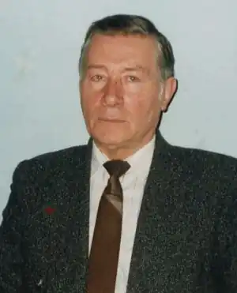
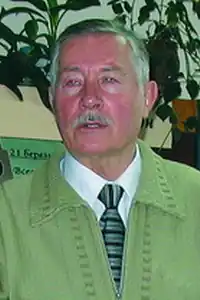

Віктор Савченко, хоч і стартував у літературу книжкою реалістичної прози ("Тривожний крик папуги", 1982 р.), але широкому читачеві він більше відомий як фантаст.
Наукова фантастика – складний жанр. Тому, хто взявся за неї, треба бути і літератором, і вченим водночас: мати певні наукові знання, вміти фантазувати, а в деякій мірі і передбачати, створювати цікавий гострий сюжет, ще й не збитись на мову сухого трактату, переобтяженого спеціальною термінологією. Лише коли письменник вміє все це поєднати, з'являється цікава захоплююча фантастика.
Віктор Савченко саме з таких фантастів. Його твори знаходять прихильного небайдужого читача, можливо, ще й тому, що фантастика письменника ґрунтується на старих, як світ, і завжди актуальних соціально-філософських ідеях. І герої його творів такі ж, як ми, як і він сам, з такими ж почуттями, тривогами, проблемами. Саме цей жанр вивів письменника на міжнародну літературну орбіту – окремі його твори й книжки виходили в іншомовних перекладах. Часто фантастику звинувачують у безнаціональності. У Віктора Савченка вона має українське забарвлення і українські корені, що теж виділяє його поміж письменників цього виду літератури. Притаманна жанру розкутість думки, незаангажованість на жодній з догм привели його зрештою до такого складного виду літератури, як езотерика. Книги: "І бачив я звірину...", "Пророцтво четвертого звіра: Даниїл", "Сочти число зверя" стали справжніми бестселерами. Уривки з них десятки разів друкувалися у вітчизняній та закордонній періодиці, за ними на обласному радіо створено цикли радіопередач. Сам автор каже: "Моя езотерика виростає з фантастики". Народився Віктор Васильович Савченко у місті Вознесенську Миколаївської області. З шістнадцяти років працював на виробництві, вчився у вечірній школі. 1963 року закінчив хіміко-технологічний факультет Дніпропетровського металургійного інституту, згодом аспірантуру. Він кандидат хімічних наук. Працював у Макіївському науково-дослідному та Дніпропетровському металургійному інститутах, пізніше – старшим науковим співробітником Дніпропетровського відділення інституту мінеральних ресурсів Міністерства геології України. З 1984 року Віктор Васильович – член Спілки письменників України, з 1994-го по 2002-й очолював Дніпропетровську організацію письменницької спілки. За цей час, як голова обласної організації НСПУ, написав і видав дві книжки-есе: "Бог не під силу хреста не дає" та "Шлях у три покоління", присвячені, відповідно, поетам і прозаїкам Придніпров’я. А також упорядкував і видав "Антологію поезії Придніпров’я" та "Антологію прози Придніпров’я", до яких увійшли кращі твори всіх поетів і прозаїків краю (живі і ті, кого вже немає). За цими виданнями у навчальних закладах тепер вивчають літературу рідного краю. Патріотом він був завжди. Доля звела його з прекрасними поетами і людьми Михайлом Чханом та Іваном Сокульським (згодом багаторічним в’язнем комуністичного концтабору). Надто великий вплив на формування громадянської свідомості В. Савченка мав М. Чхан. Вони були не лише друзями-однодумцями. Багато років їх переслідували, не давали можливості друкуватися. Віктор Савченко став одним з останніх письменників України, засуджених радянською владою – за націоналізм, звичайно ж. У пам’ять про тривожні часи цих цькувань він присвятив М. Чханові свій, можна сказати, титульний фантастичний роман "Під знаком цвіркуна". Уривки з цього роману друкувалися в багатьох колективних збірниках і часописах, твір вивчають у школі. Творчості В. Савченка притаманні лаконізм і точність думки (це від науковця), що часом межують з афористичністю, а також образність і метафоричність. Останнє, а також незакомплексованість на жодній із догм, сприяли йому у "розшифровці" метафор, якими були передані пророцтва святого Іоана Богослова та Даниїла. Переважну більшість творів письменника, до певної міри, можна назвати експериментальними. Наприклад, у романі "Монолог над безоднею" використано елементи давньої індійської поетики. Це, коли кожен розділ несе в собі певний, притаманний тільки для даної ситуації, головний настрій героя, а відтак і читача. Всього таких настроїв дев’ять. Стільки ж глав має й роман. У другому творі "Під знаком цвіркуна" кількість основних персонажів відповідає кількості чакр на фізичному тілі людини, крізь які людина обмінюється енергетикою з космосом. До творчості письменник ставиться дуже відповідально. У нього є новели, які він переробляв по кілька разів. Якось його колега здивовано запитав: "Навіщо ти змарнував сюжет на оповідання? Тут можна створити роман, і з цією ж назвою." На що В. Савченко відказав, що це оповідання ("Гостинець для Президента"), обсяг якого сімнадцять сторінок, друкувалося різними часописами й видавництвами (у тому числі й закордонними) вже тринадцять разів. Отже, якщо помножити сімнадцять на тринадцять, то матимемо обсяг роману. Майже всі його твори, у тому числі й книжки, перевидавалися по декілька разів. Це свідчить про неабияку довіру читача й видавця. У творчому набутку письменника книги реалістичної прози, фантастики, есеїстики, езотеричних досліджень. Спробував він себе також у жанрі драматургії – за п'єсою, присвяченою Дмитрові Яворницькому "Народжений під знаком Скорпіона", поставлено спектакль у Дніпропетровському Академічному музично-драматичному театрі ім. Т. Шевченка. Окремі твори друкувалися в перекладах російською, угорською, чеською, словацькою мовами. Методистами Обласного інституту освіти й України створена низка методичних посібників з вивчення творів Віктора Савченка у школах і вищих навчальних закладах. Письменник нагороджений літературними преміями ім. Д. Яворницького (1995 р., за п’єсу "Народжений під знаком скорпіона") та "Благовіст" (1998., за роман "З того світу – інкогніто"). На Всеукраїнському конкурсі "читацьких симпатій" на кращу книжку фантастики, який тривав протягом 1989 року, посів третє місце (Диплом "Чумацький шлях"). Двічі обирався з'їздами письменників членом Головної ради та Президії Національної Спілки письменників України. Поміж творів, які не вийшли у світ окремою книжкою, але вже апробовані періодикою, можна назвати історичний роман "Золото і кров Сінопа", який повністю було надруковано в альманасі "Свічадо" (1995–1996 рр.) та журналі "Вітчизна" (1996 р.). У письменника великі творчі плани і задуми. Хай вони здійсняться. Література: Савченко В. Бог не під силу хреста не дає: Есе.– Дніпропетровськ: Січ, 1999.– 62 с. Савченко В. Дві вершини гороскопу: Худож.-документ. роман.– Дніпропетровськ: Січ, 1999.– 192 с.: Також: 2-ге вид.– Дніпропетровськ: Січ, 2003.– 192 с. Савченко В. З того світу – інкогніто: Роман.– К.: Україн. письменник, 2003.– 160 с. Савченко В. Здобутки і негаразди літературного процесу на Придніпров’ї // Особливості літературного процесу Придніпров’я.– Дніпропетровськ: ДНУ, 2002.– С. 9–13. Савченко В. І бачив я звірину...: Окультне дослідження.– Дніпропетровськ: Січ, 2000.– 328 с. Савченко В. Консульська вежа: Повісті.– Дніпропетровськ: Промінь, 1984.– 254 с. Савченко В. Монолог над безоднею. З того світу – інкогніто: Фантастичні романи.– Дніпропетровськ: Дніпрокнига, 2005.– 352 с. Савченко В. Народжений під знаком Скорпіона: Психологічна драма на дві дії.– Дніпропетровськ: Січ, 1997.– 108 с. Савченко В. Ночівля в карбоні: Науково-фантастичні повість та оповідання.– К.: Веселка, 1984.– 184 с. (Сер.: "Пригоди. Фантастика"). Савченко В. Під знаком цвіркуна: Роман.– Дніпропетровськ: Дніпрокнига, 2004.– 343 с. Савченко В. Под знаком сверчка: Роман. Рассказы / Пер. с укр. автора.– Дніпропетровськ: Пороги, 1994.– 360 с. (Сер. "Современная фантастика"). Савченко В. Пригода на п’ятому горизонті: Оповідання, повісті.– Дніпропетровськ: Промінь, 1990.– 254 с. Савченко В. Пророцтво четвертого звіра: Даниїл: Окультне дослідження.– Дніпропетровськ: Січ, 2002.– 338 с. Савченко В. Сочти число зверя: Окультное исследование / Пер. с укр.– Дніпропетровськ: Січ, 2002.– 64 с. Савченко В. Тільки мить: Науково-фантастичний роман: Для сер. та старш. шк. віку.– К.: Веселка, 1988.– 264 с. Савченко В. Тривожний крик папуги: Повість, оповідання.– К.: Молодь, 1982.– 168 с. Савченко В. Шлях у три покоління Есе.– Дніпропетровськ: Січ, 2003.– 64 с. * * * Пісоцька Т. Вивчення творів Віктора Савченка в старших класах середньої школи (романи "Монолог над безоднею", "Дві вершини гороскопу").– ДНУ.– 2002.– С. 153–156. Сахно Л. Етюди про фантастику. 5. Тільки мить: [Про творчість В. Савченка] // 3 любові і муки... / Ф. Білецький, М. Нечай, І. Шаповал та ін.– Дніпропетровськ: ВПОП "Дніпро", 1994.– С. 289–290. Сергієчко А., Гненна Г. Уроки, зігріті щирістю і любов’ю. (Література рідного краю в школі). Частина 1. 5 клас.– Дніпропетровськ, 2000.– С. 15–22. Сергієчко А., Гненна Г. Уроки, зігріті щирістю і любов’ю. (Література рідного краю в школі). Частина ІІ. 7 клас.– Дніпропетровськ, 2000.– С. 19–32 Сергієчко А., Гненна Г. Уроки, зігріті щирістю і любов’ю. (Література рідного краю в школі). Частина ІІІ. 9 клас.– Дніпропетровськ, 2000.– С. 31–56. Соболь В. Наукова фантастика Віктора Савченка // Соболь В. Не будьмо тінями зникомими: Навчально-методичний посібник. Аналіз творчості митців українського модерного слова Великої України і письменників діаспори.– Донецьк: Східний видавничий дім, 2006.– С. 201–213. Терещенко Р. Незважаючи на слабкість аргументів... // Відроджена пам’ять: Книга нарисів.– Дніпропетровськ, 1999.– С. 561–568. Фурсова О., Іванова Н. Уроки на завтра. Література рідного краю в школі. 10 клас. П’єса Віктора Савченка "Народжений під знаком Скорпіона" – твір про надзвичайну долю українського вченого Дмитра Яворницького.– Дніпропетровськ: Моноліт, 2003.– С. 3–12. Фурсова О. Уроки на завтра. Література рідного краю в 11 класі. Повість В. Савченка про науковців "Пригода на п’ятому горизонті". Дніпропетровськ: Моноліт, 2004.– С. 32–83. * * * 22 березня 60 років від дня народження Савченка Віктора Васильовича (1938 р.) // Моє Придніпров’я. Хроніка пам’ятних дат і подій області на 1998 рік: Біобібліографічний покажчик / Упоряд. І. Голуб.– Дніпропетровськ, 1997.– С. 27–30. Савченко Віктор Васильович // Писатели Днепропетровщины: Библиографический указатель.– Днепропетровск,1987.– С. 80. Савченко Віктор Васильович // Прозаїки, поети, публіцисти.. Дніпропетровська організація НСПУ: Наук.-допоміжн. Бібліогр. покажчик / Упоряд. І. Голуб.– Дніпропетровськ: ДОУНБ, 2006.– С. 101–106. Савченко В. В. Шлях у три покоління. Літературне Придніпров'я: Есе.– Дніпропетровськ: Січ, 2003.– С. 43–45.